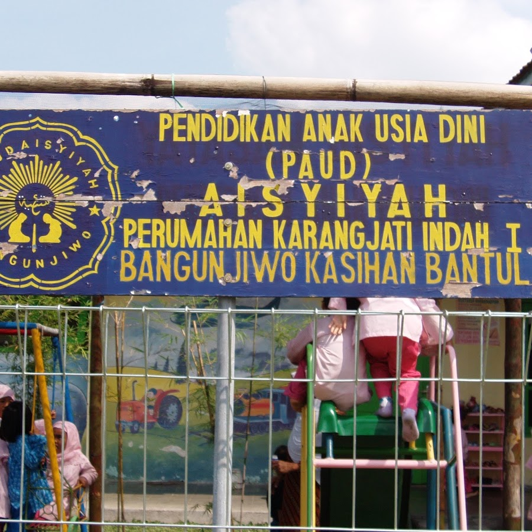

Amal Usaha Pendidikan Muhammadiyah & ’Aisyiyah
TK ABA Karangjati
Karangjati, Bangunjiwo, Kasihan, Bantul
Jenjang Pendidikan
Taman Kanak-Kanak (TK)
Karakter Unggulan
Taman Kanak-Kanak ’Aisyiyah
Pendidikan anak usia dini berbasis pembiasaan adab islami, motorik kreatif, dan hafalan doa harian.
Dokumentasi Visual Asli
Klik foto untuk memperbesar
Galeri Foto & Dokumentasi (1 Foto)

Perbesar
Dokumentasi Audiovisual Resmi